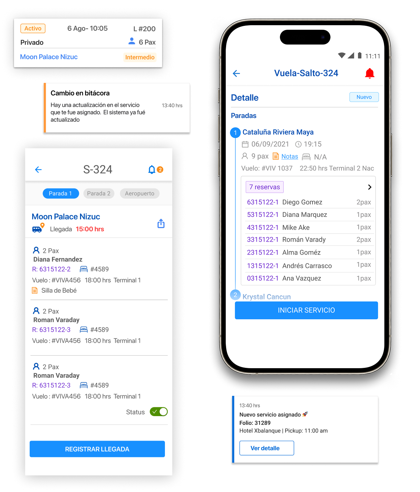
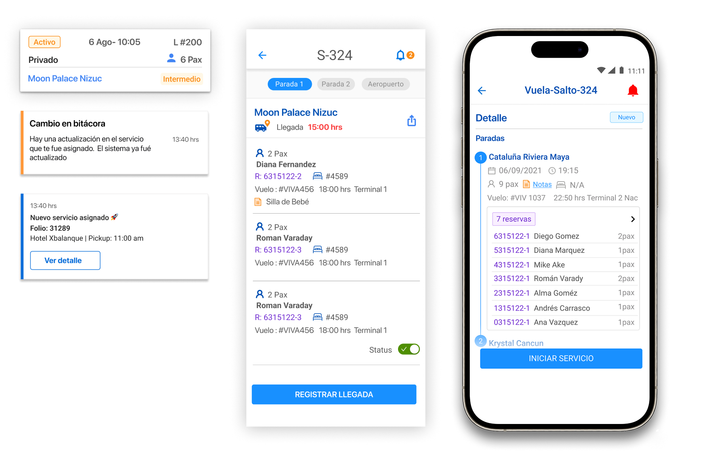
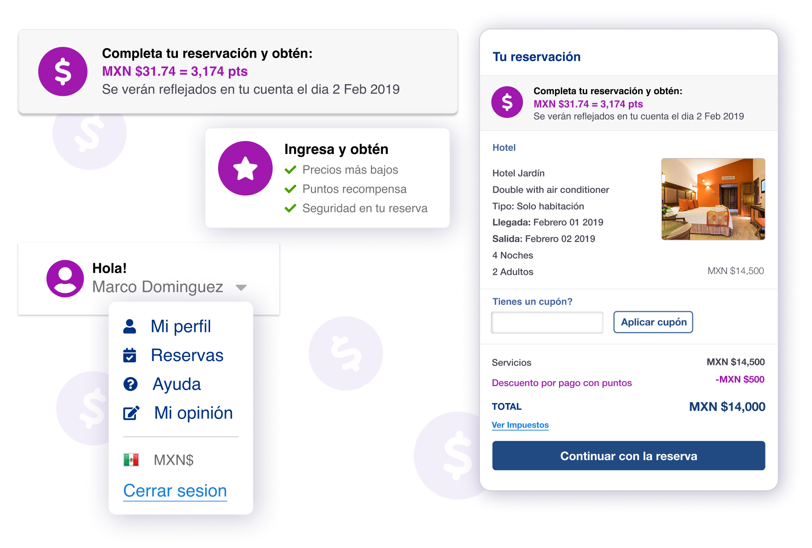
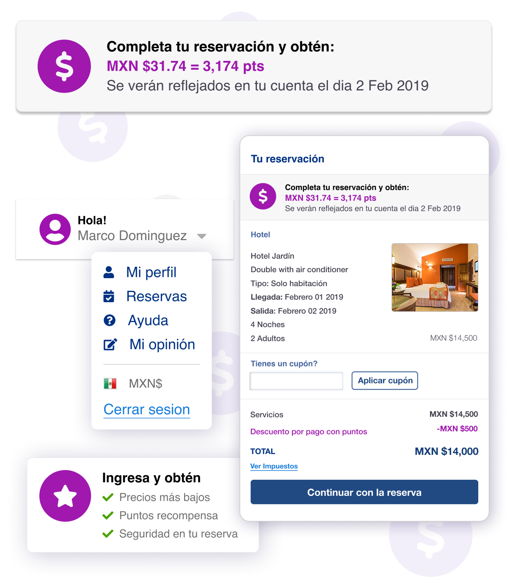
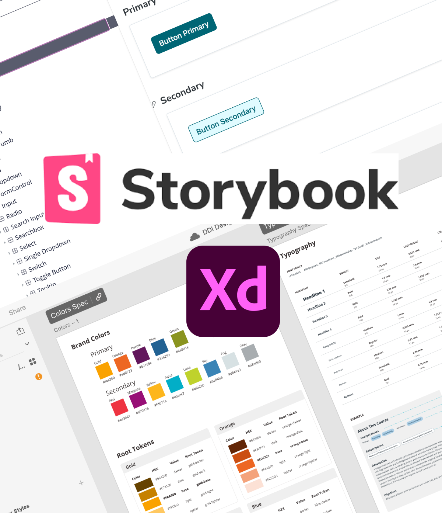
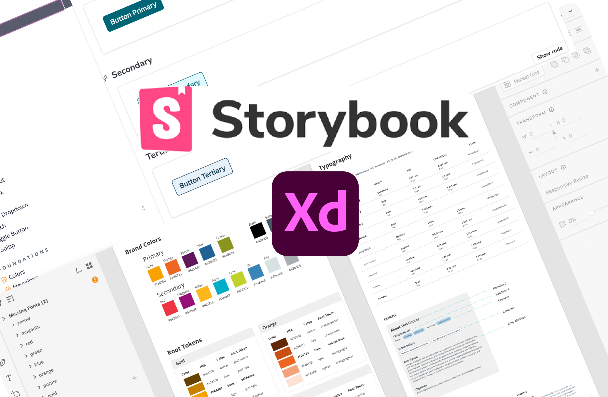
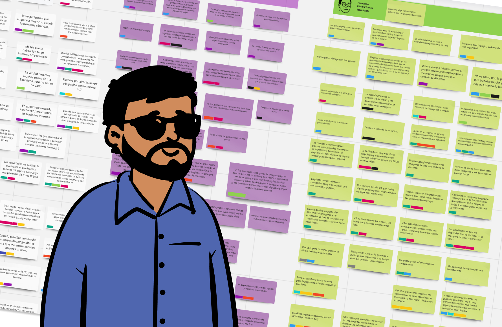
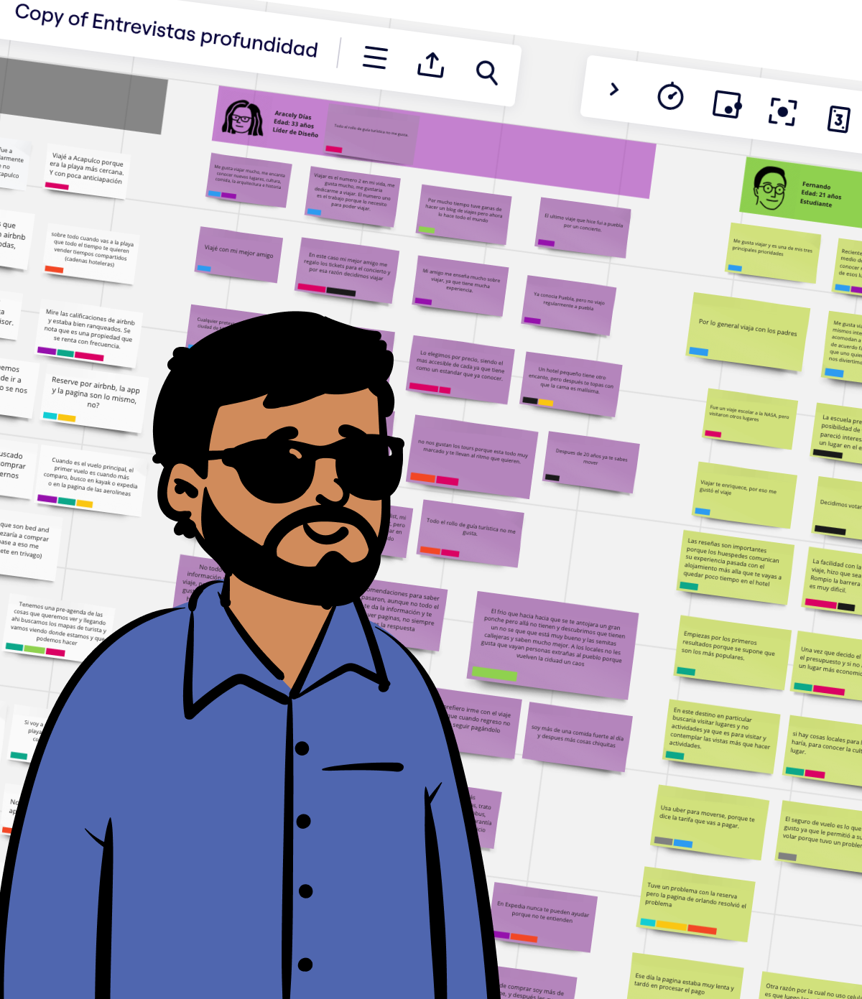

UX Designer
With 14+ years of experience, I design user-centered products for B2C, B2B, and B2B2C platforms, turning research into intuitive, high-impact solutions. Skilled in UX research, prototyping, analytics, and front-end (HTML, CSS, SASS).
With 14+ years of experience, I design user-centered products for B2C, B2B, and B2B2C platforms, turning research into intuitive, high-impact solutions. Skilled in UX research, prototyping, analytics, and front-end (HTML, CSS, SASS).


A leading travel service provider in Latin America was facing major inefficiencies in its transportation operations. Drivers struggled with outdated workflows, lack of real-time updates, and reliance on manual processes.
I led the redesign of the mobile app by conducting user research and mapping service workflows, which enabled real-time service tracking and improved coordination. This redesign reduced miscommunication and enhanced operational tracking.

Loyalty programs are powerful, but only if users see their value. In this project, I led UX improvements to enhance how users interacted with reward points, making the experience more intuitive and transparent. Through research, A/B testing, and strategic UI changes, we increased user logins, improved checkout conversions, and boosted point redemptions—turning passive rewards into a key driver of customer engagement and business growth.



A strong design system is the foundation for efficiency and consistency in digital products. In this project, I led the creation of a unified design system that streamlined collaboration between designers and developers. By defining reusable components, clear design guidelines, and scalable UI patterns, we reduced inconsistencies, accelerated product development, and improved the overall user experience. This initiative not only enhanced visual and functional coherence but also empowered teams to design and build faster with a shared, well-documented system.

In the fast-paced world of online travel agencies (OTAs) in Latin America, user experience isn't just a feature—it's a competitive advantage. As a UX Designer at one of the region's leading OTAs, I set out to understand how travelers make booking decisions and uncover the pain points in their journey.
What I found would help shape product strategy and improve conversion.


I’m Lizbeth, a UX & Product Designer with 12+ years of experience creating human-centered digital products for B2C, B2B, and B2B2C platforms. I’ve collaborated with multidisciplinary and international teams to design experiences that are both intuitive and impactful.
My background in Fine Arts and Information Design gives me a unique perspective on balancing aesthetics with usability. I’ve led projects from research and prototyping to implementation, working closely with developers to ensure smooth handoffs and cohesive product experiences.
Throughout my career, I’ve helped companies in industries like travel, logistics, and e-commerce improve user engagement, streamline workflows, and scale design systems that grow with their products.
I’m passionate about transforming research into meaningful solutions, experimenting with new tools, and designing with empathy and purpose. Outside of work, I’m a mom of two curious kids, a coffee lover, and someone who’s always learning something new.
Let's connect—I'd love to collaborate and bring meaningful experiences to life together.


Innovative and detail-oriented User Experience Designer with over 14 years of experience in creating user-centered designs for web and mobile applications. Proficient in conducting user research, usability testing, and translating insights into intuitive interfaces. Passionate about improving user interactions and enhancing overall satisfaction. Adept at collaborating with cross-functional teams to deliver compelling digital experiences that align with business goals. Committed to staying abreast of industry trends and best practices to continually elevate design quality.
Sr. UX Designer · Remote · Aug 2022 – Present
Key Projects: Design System Redesign · UI Component Library · Content User Module Migration · Video Format Experience
Lead UX Product Designer · Hybrid · Jul 2021 – Aug 2022
Key Projects: Traveline B2B2C Platform Redesign · Online Cancellation Flow · Hotel Detail Page · Payment Experience
Sr. Product Designer · On-site · May 2019 – Jul 2021
Key Projects: BD Drivers App Redesign · Service Dashboard · Airport Logistics Platform
Lead Product Designer · On-site · May 2013 – May 2019
Key Projects: Bus Booking Redesign · Rewards Flow Optimization · Apartments & Vacation Rentals Platform